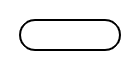
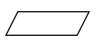
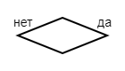
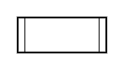

Самой простой формой записи алгоритма является словесное описание. Такой алгоритм представляет собой набор высказываний на простом разговорном языке и имеет минимум ограничений. Однако, для того чтобы избежать двухсмысленности такие алгоритмы часто являются крайне объемными и трудными для восприятия.
Более структурированной является построчная запись.
Такой алгоритм также записывается на естественном языке, но содержит ряд ограничений:
1. каждое предписание записывается с новой строки;
2. шаги алгоритма нумеруются;
3. исполнение алгоритма происходит в порядке возрастания номеров.
Построчная запись позволяет избежать ряда неопределенностей и не требует дополнительных знаний. В то же время требуется большое внимание при использовании.
Графический способ записи алгоритма является наиболее наглядным. В блок-схеме предписания изображают с помощью геометрических фигур, а взаимосвязи между ними - линиями. Наиболее распространенные обозначения представлены в таблице:
| Название | Графическое обозначение | Назначение |
|---|---|---|
| Терминатор |  | начало и завершение программы |
| Данные |  | ввод-вывод данных |
| Обработка данных | преобразование исходных данных | |
| Принятие решения |  | анализ условия, выбор дальнейшего пути алгоритма |
| Организация цикла | определение условия повторения цикла | |
| Подпрограмма |  | выполнение предопределенного алгоритма |
Создание детальной блок-схемы сложного алгоритма является трудоемкой задачей. Кроме того, схема, не умещающаяся на листе теряет свое основное преимущество - наглядность.
Любой алгоритмический язык имеет ряд отличительных характеристик:
1. Алфавит - набор используемых символов;
2. Синтаксис - система правил, по которым образуются правильные конструкции языка;
3. Семантика - система правил, строго определяющая смысл и способ употребления конструкций языка.
Существует множество алгоритмических языков, используемых для обучения алгоритмизации, а также языков программирования, которые также можно отнести к алгоритмическим.
Для записи алгоритмов на Школьном алгоритмическом языке используется некоторое ограниченное множество слов, смысл и способ употребления которых заданы раз и навсегда.
В общем виде программа имеет вид:
1. Преобразуйте словесную запись алгоритма
Рецепт омлета
Взять 2 яйца, смешать со 100 мл. молока. Добавить соль и перец по вкусу. На разогретую сковороду вылить яичную смесь. По желанию добавить колбасу и помидоры. Жарить до готовности.
-в построчную
-в блок-схему
2. Чему будет равно число "а" в результате преобразования, если в начале оно равно 17?
3. В среде КуМир составьте алгоритм для исполнителя Чертежник, изображающий фигуру.
Тест состоит из 5 теоретических вопросов по пройденной теме. На его прохождение у вас будет 10 минут. При выполнении контрольного задания будьте внимательны, обратите внимание, что вопросы могут содержать несколько правильных ответов